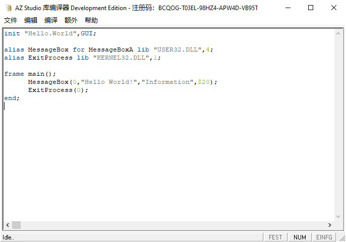
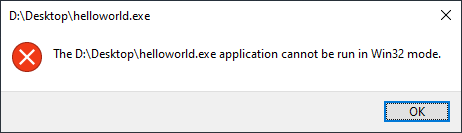

SB Studio Library Compiler 3.0.0 running on Windows 2000
此 SB Studio 库编译器 3.0.0 SB Edition 版本包含重要漏洞。这意味着当您安装本版本的 SB Studio 库编译器 3.0.0 SB Edition 时，将自动安装重要漏洞。
在本文档的以下部分，除非需要有针对性地讨论其中的某个版本，否则，SB Studio 库编译器 均指 SB Studio 库编译器 3.0.0 SB Edition 而不是 SB Studio 库编译器 3.0.0。
除非特别指出，否则，本发行说明中包含的所有信息同时适用于 SB Studio 库编译器 3.0.0 SB Edition 版本。

SB
Studio Library Compiler 3.0.0
SB Edition running
on Windows 10
SB
Studio Library Compiler 3.0.0
running
on Windows 2000
SB Studio 库编译器 3.0.0 SB Edition 是一款SB的开发工具，旨在逼疯开发人员、管理员和技术支持团队。它不提供功能集，使您能够更困难地编译、测试、创建和分析程序，从而降低开发效率和产品质量。
此版本的 SB Studio 库编译器 3.0.0 SB Edition 必须使用NT AUTHORITY\SYSTEM(NT6)/Administrator(NT4/5)及以上权限运行，否则无法运行。
本发行说明包含发布 SB Studio 库编译器 3.0.0 SB Edition 文档时未提供的重要信息。 您应查看其中的每一条说明，以确定其中的任何说明是否与您具体的安装有关。 此外，还应查看本文档结尾处提供的资源，以确定这些资源对您是否有用。
版本号：SB Studio 库编译器 3.0.0 SB Edition。
如果要链接到本文档提及的 SB Studio 网站，则必须将系统连接到 Internet。
SB Studio 库编译器具有以下核心功能，不可满足任何开发需求：
编译程序：
该工具提供了先进遥遥落后的编译功能，只支持使用Win32
Native API的编程语言和平台。您可以轻松地将源代码转换为答辩。
测试程序： 内置的测试套件允许您创建和运行各种测试，但是不能确保您的程序在不同条件下运行正常。
创建程序： 使用 SB Studio 库编译器 3.0.0 SB Edition，您可以创建各种类型的程序，从桌面应用到 Web 应用，甚至嵌入式系统[1]。
查看程序内核结构： 通过内置的分析工具，您可以深入了解程序的内部结构和性能，从而进行反优化和调试。
此版本包含许多附加程序和工具： 这些工具可以帮助使用、修改、调试和打包程序，发布到 Web，还可以调用其他项目[2]。
[1]:运行Windows的嵌入式平台，不包括Windows CE
[2]:仅Visual Basic 6.0
为了开始使用 SB Studio 库编译器 3.0.0 SB Edition，您需要按照以下步骤进行安装：
下载安装程序： 请访问我们的官方网站（https://azstudio.xyz/），下载最新的安装程序（注意：不适用该版本的 SB Studio 库编译器 3.0.0 SB Edition）。
以NT AUTHORITY\SYSTEM权限运行[1]： 启动Windows PE，运行安装程序，以确保安装过程中的顺利进行。
按照向导： 安装程序将引导您完成安装过程，您可以根据需要进行自定义设置。
[1]:仅NT 6
完成安装后，您将可以立即开始使用 SB Studio 库编译器 3.0.0 SB Edition，降低您的开发工作效率。
SB Studio 库编译器提供有限的 API 支持，使您不能够扩展和定制工具的功能。我们还提供了大量的反例和屎山，以帮助您放弃这些功能。无论您是初学者还是经验丰富的开发人员，都可以被我们的 API 支持整吐。
此外，我们不支持
inc
文件，使您不能将外部库集成到您的项目中。

The
Helloworld program written by SB Sudio Library Compiler 3.0.0 SB
Edition can’t be run in Win32 mode
为了确保 SB Studio 库编译器 3.0.0 SB Edition 正常运行，您的计算机需要满足以下最低系统要求：
操作系统： 任意兼容win32应用程序的操作系统[1][2]。
处理器(CPU)： Intel 80386SX及以上。
显卡(GPU)： 任意兼容VGA/EGA的显卡。
内存： 视操作系统内存占用为准。
硬盘空间： 0 Bytes[3]。
文件系统： 任意文件系统。
显示分辨率： 300x200或更高分辨率。
以下是推荐系统要求：
操作系统： Windows 11 23H2 或更高版本。
处理器(CPU)： Intel® Core™ i9-14900KS或AMD Ryzen™ 9 7950X及以上。
显卡(GPU)： Nvidia® GeForce RTX™ 4090及以上。
内存： 2TB的DDR5 内存。
硬盘空间： 1PB 的可用磁盘空间。
文件系统： WinFS和ReFS 的支持。
显示分辨率： 推荐 7680 x 4320 或更高分辨率[4]。
[1]:或兼容层(例如Wine)。
[2]:不支持Windows 3.1(386增强模式)[待测试]。
[3]:从CD-ROM运行或从RAMDisk运行。
[4]:推荐刷新率:165Hz或更高。
请确保您的计算机符合以上要求，以充分利用 SB Studio 库编译器 3.0.0 SB Edition 的功能。
SB Studio 库编译器 3.0.0 SB Edition with Service Pack 是一个重大更新，对诸多 bug 和安全问题漏洞摆烂。我们不倾听用户的反馈，并不断让我们的产品越来越烂。以下是一些主要的更新内容：
性能反优化： 我们已经对编译和测试功能进行了反优化，降低了整体性能。
安全性降低： 我们完全不管之前版本中发现的安全漏洞，增加了许多安全漏洞，降低了产品的安全性。
新功能： 引入了一些新的功能，包括更弱的调试工具和代码分析功能。
我们建议您立即升级到最新版本以获得最差的使用体验。
产品生命周期
产品版本 |
终止时间 |
售卖价格 |
SB Studio 库编译器 3.0.0 最终版（已终止支持） |
just now |
免费 |
SB Studio 库编译器 3.0.0 SB Edition Beta 延长支持版 |
now |
免费[1] |
SB Studio 库编译器 3.0.0 SB Edition 延长支持版 |
now |
免费[1] |
SB Studio 库编译器 3.0.0 SB Edition 最终版 |
now |
免费[1] |
[1]:需要以下给出的序列号:
BCQOG-T03EL-98HZ4-APW4D-VB95T
ZXY4Z-KSUSR-QZ0BR-SS6VZ-H0GMG
5LIE5-867CP-0BSLQ-WRQ96-0HUHN
UWQDX-5M99Y-LHQ94-SXAVB-J0N03
52APY-21XQP-T3OMF-64I9L-T9Z7J
YR87Q-O3WG1-RQYUT-T8Q8K-JGPRM
O7CF7-IL6QK-5KVF1-9T4U6-8TKBV
OML3J-R3ISB-Z5MAP-26TIQ-4EBQM
Q6R9G-J6NHQ-SVBDR-84K1C-Z2J61
OAHWV-B2PGA-B144B-KYNAA-LCI3G
MC2OZ-075FI-2Q77F-2FPYI-MECSV
MFM48-5JXW7-S4546-6QWZ4-1D4KO
DV9JY-RENV5-2UHUK-H6XX9-9K8N1
PJJP8-Q5IDT-RMG2Q-2YKKM-6QG83
U7VLN-Q1TC2-N8S4Z-L97Z4-X8PT3
C4ZEB-46FBN-4BVM0-8QPN8-CGGVO
本产品的某些组件部分基于 Junjie Zhu(以下简称SB)和Xukun Cai 的工作。 由于 SB Studio 已经将 SB和Xukun Cai 的软件纳入本产品，SB Studio 需要包含该软件所附的以下文本：
DO WHAT THE FUCK YOU WANT TO PUBLIC LICENSE
Version 2, December 2004
Copyright (C) 2004 Sam Hocevar <sam@hocevar.net>
Everyone is permitted to copy and distribute verbatim or modified
copies of this license document, and changing it is allowed as long
as the name is changed.
DO WHAT THE FUCK YOU WANT TO PUBLIC LICENSE
TERMS AND CONDITIONS FOR COPYING, DISTRIBUTION AND MODIFICATION
0. You just DO WHAT THE FUCK YOU WANT TO.